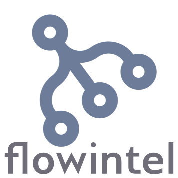

Projects at hackathon.lu
Projects and Team at hackathon.lu 2026
The following open-source projects will be at the hackathon. If you’d like to include your project, feel free to contact us!
MISP Project

MISP, the open source threat sharing platform.
AIL Project

AIL Project is an open source framework composed of different modules to collect, crawl, dig and analyse unstructured data. AIL includes an extensible Python-based framework for analysis of unstructure information collected via an advanced Crawler manager or from different feeders (such as Twitter, Discord, Telegram Stream providers) or custom feeders.
Kunai

Kunai: bring your Linux Threat-Hunting capabilities to the next level.
Flowintel

Flowintel is an open-source platform designed to assist analysts in organizing their cases and tasks. It features a range of tools and functionalities to enhance workflow efficiency.
Lacus

Lacus: A capturing system using playwright, as a web service.
Lookyloo

Lookylooo is a web interface that captures a webpage and then displays a tree of the domains, that call each other.
Pandora

Pandora is an analysis framework to discover if a file is suspicious and conveniently show the results.
Vulnerability-Lookup

Vulnerability-Lookup facilitates quick correlation of vulnerabilities from various sources, independent of vulnerability IDs, and streamlines the management of Coordinated Vulnerability Disclosure (CVD).
VulnTrain
VulnTrain is a tool for generating diverse datasets and models using vulnerability data from Vulnerability-Lookup.
It leverages all vulnerability advisory sources supported by Vulnerability-Lookup to train models, utilizing over one million JSON records.
Additionally, data from the vulnerability-lookup:meta container, including enrichment sources such as vulnrichment and Fraunhofer FKIE, is incorporated to enhance model quality.
Various models are already available on Hugging Face and we are always interested in new ideas (datasets, trainers, integration with Vulnerability-Lookup, …)!
OISF and Suricata


Suricata is a high performance, open source network analysis and threat detection software used by most private and public organizations, and embedded by major vendors to protect their assets.
cocktailparty

cocktailparty is a websocket data brocker system based on the phoenix framework.
Mercator

Mercator is a powerful and versatile open-source web application designed to facilitate the mapping of information systems, as outlined in the Mapping The Information System Guide by ANSSI. Whether you’re an operator of vital importance or part of a broader IT governance framework, Mercator is an essential tool for gaining visibility, control, and ensuring the resilience of your information systems.
sysdiagnose analysis framework

sysdiagnose is an open-source framework developed to facilitate the analysis of the Apple sysdiagnose files and especially the one generated on mobile devices (iOS / iPadOS). In the light of targeted attacks against journalists, activist, representatives from the civil society and politicians, it empowered incident response team to review device behaviour and ensure their integrity. This tool is initially the result of a joint effort between EC DIGIT CSOC (European Commission DG DIGIT) and CERT-EU (https://cert.europa.eu/).
YALTF (Yet Another License Tool and Framework)

YALTF is a tool designed to scan and gather software licenses across multiple remote systems. It connects to target systems via SSH and collects information about installed packages and their associated licenses. It features Remote system scanning via SSH, Parallel scanning of multiple targets, Support for CentOS, Fedora, RHEL (Rocky) and OpenSUSE, Structured JSON output. This tool was initially developed by the International Committee of the Red Cross (ICRC) in collaboration with Cortex Security S.A.
IDPS-ESCAPE

IDPS-ESCAPE (Intrusion Detection and Prevention Systems for Evading Supply Chain Attacks and Post-compromise Effects), part of project CyFORT, is an open-source SOAR system powered by a dedicated anomaly detection toolbox (ADBox), integrated with open-source software such as Wazuh and Suricata. The ADBox provides an extensible framework for integrating different AD algorithms and currently includes an implementation of MTAD-GAT, a Multivariate Time-series Anomaly Detection (MTAD) algorithm relying on Graph Attention Networks (GAT).
SATRAP

SATRAP (Semi-Automated Threat Reconnaissance and Analysis Platform) part of project CyFORT, is an open-source, cross-platform software aimed at supporting computer-aided analysis of cyber threat intelligence (CTI) by leveraging automated reasoning and inference. At its core, SATRAP implements a knowledge representation system (KRS) consisting of a CTI knowledge base coupled with a reasoning engine for inferring new knowledge, built on top of TypeDB. The KRS grounds SATRAP into formal underpinnings, enabling the introduction of semantics into the storage, processing, and analysis of CTI.
MISPERER
 MISPerer MISPerer implements Anthropics’s Model Context Protocol (MCP) to enable Large Language Models (LLMs) to interact directly with the MISP threat intelligence platform. This allows users and automated systems to query and analyze MISP data using natural language prompts.
MISPerer MISPerer implements Anthropics’s Model Context Protocol (MCP) to enable Large Language Models (LLMs) to interact directly with the MISP threat intelligence platform. This allows users and automated systems to query and analyze MISP data using natural language prompts.
Range42
 Range42 is a modular cyber range platform designed for real-world readiness. We build, deploy, and document offensive, defensive, and hybrid cyber training environments using reproducible, infrastructure-as-code methodologies.
Range42 is a modular cyber range platform designed for real-world readiness. We build, deploy, and document offensive, defensive, and hybrid cyber training environments using reproducible, infrastructure-as-code methodologies.
Monarc
 Monarc is an open-source tool and a method based on ISO/IEC 27005 that helps conduct an optimised, precise, and repeatable risk assessment. The code is based on php/Laminas backend, Angularjs frontend and MariaDB database. It also has some related services based on Python/Flask and Postgresql. The official website is available here.
Monarc is an open-source tool and a method based on ISO/IEC 27005 that helps conduct an optimised, precise, and repeatable risk assessment. The code is based on php/Laminas backend, Angularjs frontend and MariaDB database. It also has some related services based on Python/Flask and Postgresql. The official website is available here.